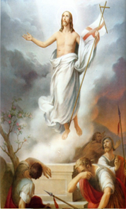

En este tiempo de pandemia hemos visto en nuestro pueblo de Casma, a muchas familias perder a sus seres queridos. Muchos cuidan su vida y respetan la cuarentena, cumplen con el lavado frecuente de manos, usan correctamente la mascarilla, respetan el distanciamiento social, pero por otra parte hay quienes no lo han cumplido solidariamente, atentando contra la salud de los demás. Aun así, celebramos con mucha alegría la Resurrección de Jesucristo.
Ante esta situación ¿Cómo podemos contribuir a formar una comunidad fraterna?
¿Cuál es el principal problema que se presenta en nuestra comunidad?
¿Cómo celebraremos con alegría la Resurrección, ante el temor por el aumento de la pandemia?
¿Qué entendemos del texto?
¿Qué significa, dar mi testimonio?
¿Qué debo ser yo en mi comunidad?
Es el aniversario del triunfo de Cristo. Es la feliz conclusión del drama de la Pasión y la alegría inmensa que sigue al dolor
¿Cómo no alegrarse por la victoria de aquel que tan injustamente fue condenado a la pasión más terrible y a la muerte en la cruz?, ¿por la victoria de Aquel que anteriormente fue flagelado, abofeteado, ensuciado con salivazos, con tanta inhumana crueldad?
La Resurrección nos descubre nuestra vocación cristiana y nuestra misión: acercarla a todos los hombres. El hombre no puede perder jamás la esperanza en la victoria del bien sobre el mal.

La Pascua es la celebración litúrgica más importante del año. Es un día en que reafirmamos nuestra fe en la Resurrección de Cristo entre los muertos.
Con alegría y con esperanza Celebramos la Resurrección de Cristo.
A partir de lo aprendido, respondamos brevemente las siguientes preguntas